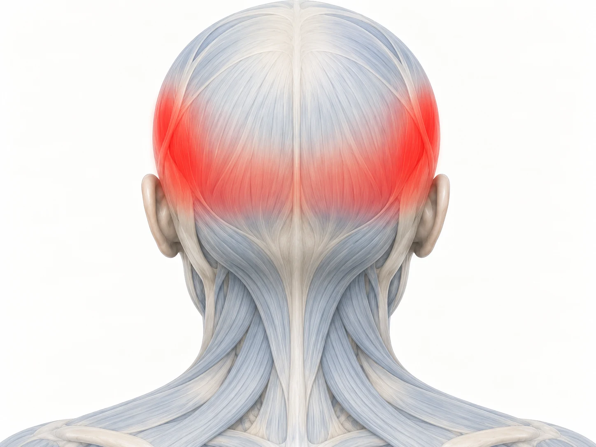
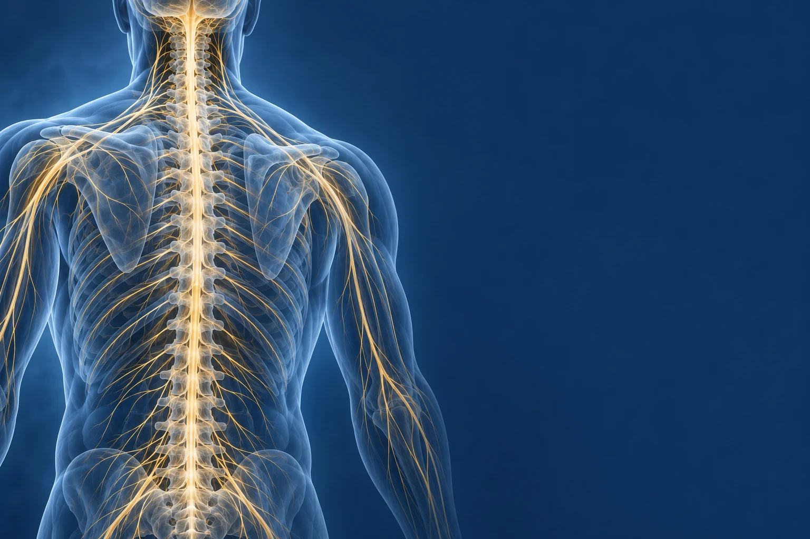
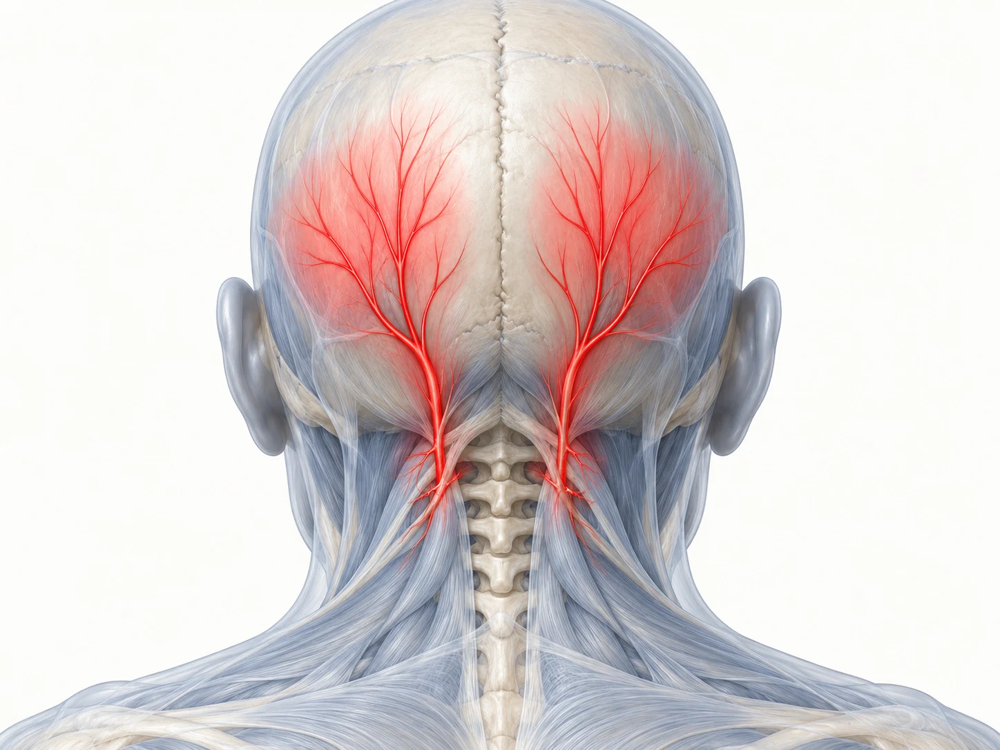
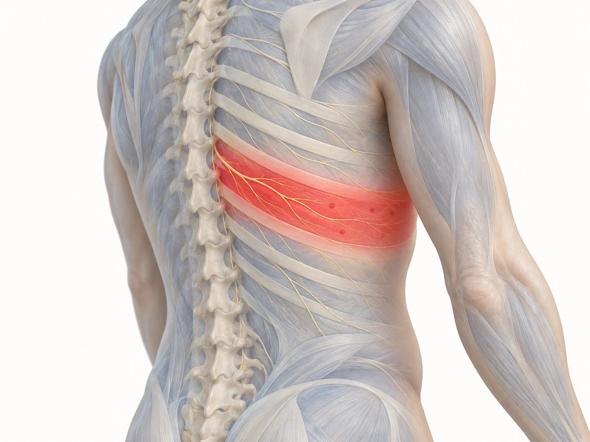
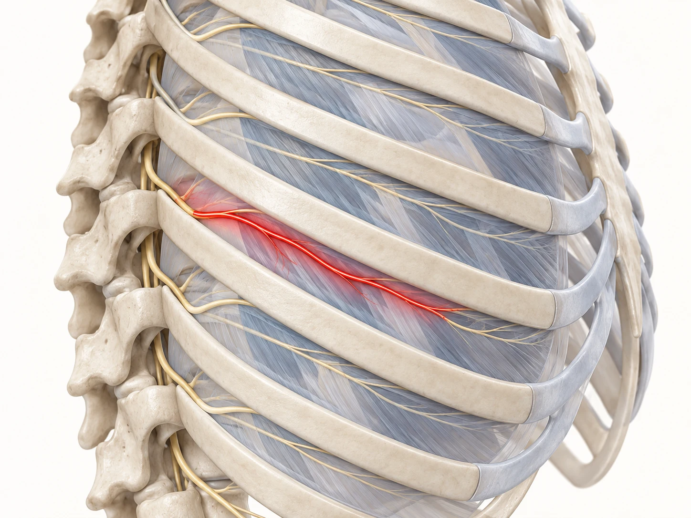
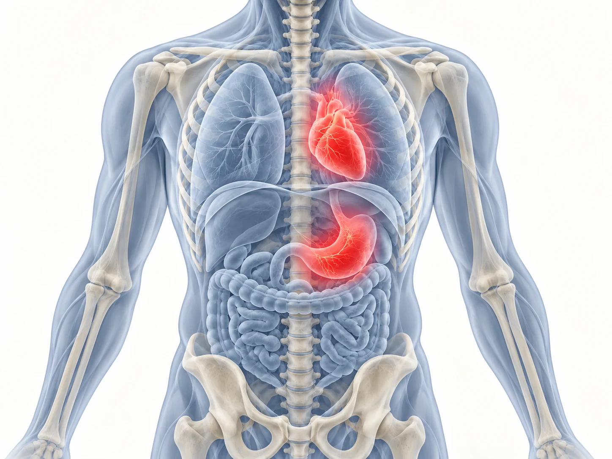

통증의 원인을 더 깊이 찾아가는 진료
두통과 신경통은 통증이 나타나는 위치와 양상뿐 아니라 저림·어지럼증 등 함께 나타나는 증상에 따라 원인이 달라질 수 있습니다.
증상의 시작과 지속 시간, 신경 증상과 전신 상태를 함께
살펴
필요한 검사와 치료 방향을 안내합니다.
ABOUT THE CONDITION
긴장성 두통
머리를 누르거나 조이는 양상의 두통이 자주 반복되는 상태입니다.

긴장성 두통의 원인
오래 유지하는 자세와 스트레스, 수면 부족이 두통과 관련될 수 있습니다.
목·어깨 주변의 긴장과 불편한 수면 환경도 함께
살펴봅니다.

모니터·스마트폰을 오래 보는 구부정한 자세
육체적·정신적 스트레스와 수면 부족
목·어깨·두피 주변 근육의 긴장
불편한 수면 자세나 체형에 맞지 않는 베개

SYMPTOMS
긴장성 두통 대표 증상
- 01
머리 전체에 띠를 두른 듯 꽉 조이고 묵직한 통증
- 02
목 뒤쪽과 어깨 라인의 뻐근함이 두통과 함께 동반
- 03
늦은 오후나 저녁이 될수록 통증이 점차 심해짐
- 04
머리가 무겁고 집중력이 떨어지며 쉽게 피로해짐
- 05
눈 주변이나 관자놀이 부위까지 뻐근한 통증 확장
갑자기 시작된 극심한 두통이나 말하기 어려움·마비가 동반되면 즉시 응급 진료가 필요합니다.
긴장성 두통의 진단
통증의 양상과 신경 분포, 어지럼증 등 함께 나타나는 증상을 살펴 필요한 검사와 치료 방향을 안내합니다.

문진·신체검진
통증이 시작된 시점과 양상, 병력과 생활 습관을 확인합니다. 압통과 움직임, 근력·감각 등을 함께 살펴 진단의 방향을 정합니다.

신경학적 진찰
통증이 퍼지는 범위와 감각·근력·반사 등을 살펴봅니다. 신경 자극이나 다른 신경계 문제를 의심할 소견이 있는지 확인합니다.
관련 원인 확인
기저질환과 복용 약물, 수면·생활 습관 등을 확인합니다. 증상과 생활 속 변화를 함께 살펴 통증과 관련된 요인을 평가합니다.
검사는 증상과 진찰 결과에 따라 필요한 항목을 선택합니다.
ABOUT THE CONDITION
후두신경통
목 뒤에서 두피로 이어지는 후두신경이 자극받아 뒷머리에 통증이 생기는 질환입니다.

후두신경통의 원인
목 위쪽 근육의 긴장이나 경추 주변의 변화가 후두신경을 자극할 수 있습니다.
오래 유지되는 자세와 외상 여부도 함께
확인합니다.

목 위쪽 근육의 긴장으로 인한 신경 자극
오래 유지되는 구부정한 목 자세와 근육 부담

경추 관절염 등 목 주변 구조의 변화

외상이나 갑작스러운 목 움직임에 따른 자극
SYMPTOMS
후두신경통 대표 증상
- 01
뒷머리부터 정수리, 관자놀이까지 찌릿찌릿한 통증
- 02
바늘로 찌르거나 전기가 통하듯 순간적으로 쿡쿡 쑤심
- 03
뒷머리 통증 부위를 손으로 누르거나 터치하면 뚜렷한 통증
- 04
통증이 심할 때는 눈 뒤쪽까지 뻐근하고 시린 느낌
- 05
머리를 감거나 빗질할 때 두피 감각이 둔하거나 통증 유발
후두신경통의 진단
통증의 양상과 신경 분포, 어지럼증 등 함께 나타나는 증상을 살펴 필요한 검사와 치료 방향을 안내합니다.
문진·신체검진
통증이 시작된 시점과 양상, 병력과 생활 습관을 확인합니다. 압통과 움직임, 근력·감각 등을 함께 살펴 진단의 방향을 정합니다.
신경학적 진찰
통증이 퍼지는 범위와 감각·근력·반사 등을 살펴봅니다. 신경 자극이나 다른 신경계 문제를 의심할 소견이 있는지 확인합니다.
관련 원인 확인
기저질환과 복용 약물, 수면·생활 습관 등을 확인합니다. 증상과 생활 속 변화를 함께 살펴 통증과 관련된 요인을 평가합니다.
검사는 증상과 진찰 결과에 따라 필요한 항목을 선택합니다.
ABOUT THE CONDITION
대상포진 및 대상포진 후 신경통
대상포진은 신경을 따라 통증과 피부 발진이 나타나는 질환으로, 피부 병변이 회복된 후에도 손상되거나 예민해진 신경을 따라 통증이 지속될 수 있습니다.

대상포진 및 대상포진 후 신경통의 원인
몸속에 잠복해 있던 수두·대상포진 바이러스가 다시 활성화되면서 신경에 염증이 생깁니다.
발진이 가라앉은 뒤에도 신경 손상으로
통증이 이어질 수 있습니다.
잠복해 있던 수두·대상포진 바이러스의 재활성화

나이가 들면서 높아지는 대상포진 후 신경통 위험
질환이나 치료로 면역 기능이 낮아진 상태

대상포진으로 손상된 신경에 남는 통증
SYMPTOMS
대상포진 대표 증상
- 01
발진이 나타나기 전 피부 한쪽에 느껴지는 따끔거림·화끈거림과 통증
- 02
몸이나 얼굴의 한쪽에 띠 모양으로 나타나는 붉은 발진
- 03
붉어진 피부 위에 무리 지어 생기는 작은 물집
- 04
발진 부위의 가려움과 스치거나 만질 때 느껴지는 통증
- 05
두통·피로감·몸살 같은 전신 불편감이 함께 나타나기도 함
대상포진 후 신경통 대표 증상
- 01
몸 한쪽에 띠 모양으로 나타나는 따끔거림과 통증
- 02
대상포진 시기에 나타날 수 있는 물집성 발진
- 03
발진이 가라앉은 뒤에도 이어지는 화끈거리거나 찌르는 통증
- 04
옷이나 손이 스치기만 해도 느껴지는 통증
- 05
같은 부위의 가려움·저림 또는 감각 저하
대상포진 및 대상포진 후 신경통의 진단
통증의 양상과 신경 분포, 어지럼증 등 함께 나타나는 증상을 살펴 필요한 검사와 치료 방향을 안내합니다.
문진·신체검진
통증이 시작된 시점과 양상, 병력과 생활 습관을 확인합니다. 압통과 움직임, 근력·감각 등을 함께 살펴 진단의 방향을 정합니다.
피부·감각 확인
발진이 있었던 위치와 피부 상태를 확인합니다. 가볍게 닿을 때의 통증, 저림과 감각 저하의 범위도 함께 살펴봅니다.
신경학적 진찰
통증이 퍼지는 범위와 감각·근력·반사 등을 살펴봅니다. 신경 자극이나 다른 신경계 문제를 의심할 소견이 있는지 확인합니다.
검사는 증상과 진찰 결과에 따라 필요한 항목을 선택합니다.
ABOUT THE CONDITION
늑간신경통
갈비뼈 사이의 신경이 자극되거나 손상되어 가슴과 옆구리, 등에 통증이 생기는 상태입니다.

늑간신경통의 원인
등뼈 주변의 변화나 갈비뼈·근육 손상이 늑간신경을 자극할 수 있습니다.
대상포진 이후 남은 신경통도 관련 원인으로
살펴봅니다.

흉추(등 뼈)의 디스크, 관절염 또는 흉추 정렬 변형
심한 기침, 운동 등으로 인한 늑골·늑간 근육 손상

외상으로 인한 갈비뼈 미세 골절 또는 타박상
대상포진 바이러스 감염 후 신경통 잔여
SYMPTOMS
늑간신경통 대표 증상
- 01
가슴, 옆구리, 등 뒤쪽이 콕콕 찌르거나 전기가 통하듯 찌릿함
- 02
숨을 깊이 쉬거나 기침, 기지개를 켤 때 통증이 급격히 심해짐
- 03
한쪽 옆구리 및 갈비뼈 라인을 따라 통증이 띠 모양으로 형성
- 04
옆구리나 가슴 부위를 살짝 누르기만 해도 찌릿함
- 05
몸을 비틀거나 젖힐 때 통증으로 인해 동작 제한
지속되는 흉통이나 식은땀·호흡곤란이 동반되면 신경통으로 단정하지 말고 즉시 응급 진료를 받아야 합니다.
늑간신경통의 진단
통증의 양상과 신경 분포 등 함께 나타나는 증상을 살펴 필요한 검사와 치료 방향을 안내합니다.
문진·신체검진
통증이 시작된 시점과 양상, 병력과 생활 습관을 확인합니다. 압통과 움직임, 근력·감각 등을 함께 살펴 진단의 방향을 정합니다.
신경학적 진찰
통증이 퍼지는 범위와 감각·근력·반사 등을 살펴봅니다. 신경 자극이나 다른 신경계 문제를 의심할 소견이 있는지 확인합니다.
관련 원인 확인
기저질환과 복용 약물, 수면·생활 습관 등을 확인합니다. 증상과 생활 속 변화를 함께 살펴 통증과 관련된 요인을 평가합니다.
검사는 증상과 진찰 결과에 따라 필요한 항목을 선택합니다.
ABOUT THE CONDITION
자율신경 관련 통증 및 어지럼증
자율신경계의 변화와 관련해 여러 신체 증상이 함께 나타날 수 있습니다.

자율신경 관련 통증 및 어지럼증의 원인
어지럼증·두근거림·소화 불편감은 여러 원인으로 나타날 수 있습니다.
생활 속 악화 요인과 기저질환·약물 등을 함께 확인하며,
자세만으로 원인을 단정하지 않습니다.
지속적인 스트레스와 긴장에 따른 증상 악화
수면 부족과 불규칙한 생활로 누적되는 피로
탈수나 오래 서 있는 상황에서 심해지는 어지럼증
당뇨 등 기저질환이나 복용 약물의 영향
SYMPTOMS
자율신경 관련 통증 및 어지럼증 대표 증상
- 01
만성 두통, 띵함, 머리가 맑지 않은 느낌(브레인포그)
- 02
핑 도는 듯한 어지럼증 및 목·어깨 주변의 찌푸둥한 통증
- 03
가슴 두근거림, 속 답답함, 소화 불편감 동반
- 04
손발이 차갑거나 과도한 식은땀 발생
- 05
자고 일어나도 피로가 풀리지 않고 몸이 무거움
자율신경 관련 통증 및 어지럼증의 진단
통증의 양상과 신경 분포, 어지럼증 등 함께 나타나는 증상을 살펴 필요한 검사와 치료 방향을 안내합니다.
문진·신체검진
통증이 시작된 시점과 양상, 병력과 생활 습관을 확인합니다. 압통과 움직임, 근력·감각 등을 함께 살펴 진단의 방향을 정합니다.
신경학적 진찰
통증이 퍼지는 범위와 감각·근력·반사 등을 살펴봅니다. 신경 자극이나 다른 신경계 문제를 의심할 소견이 있는지 확인합니다.
관련 원인 확인
기저질환과 복용 약물, 수면·생활 습관 등을 확인합니다. 증상과 생활 속 변화를 함께 살펴 통증과 관련된 요인을 평가합니다.
검사는 증상과 진찰 결과에 따라 필요한 항목을 선택합니다.
TREATMENT
회복을 위한 치료 프로그램
환자의 상태에 따라 필요한 치료를 판단합니다.